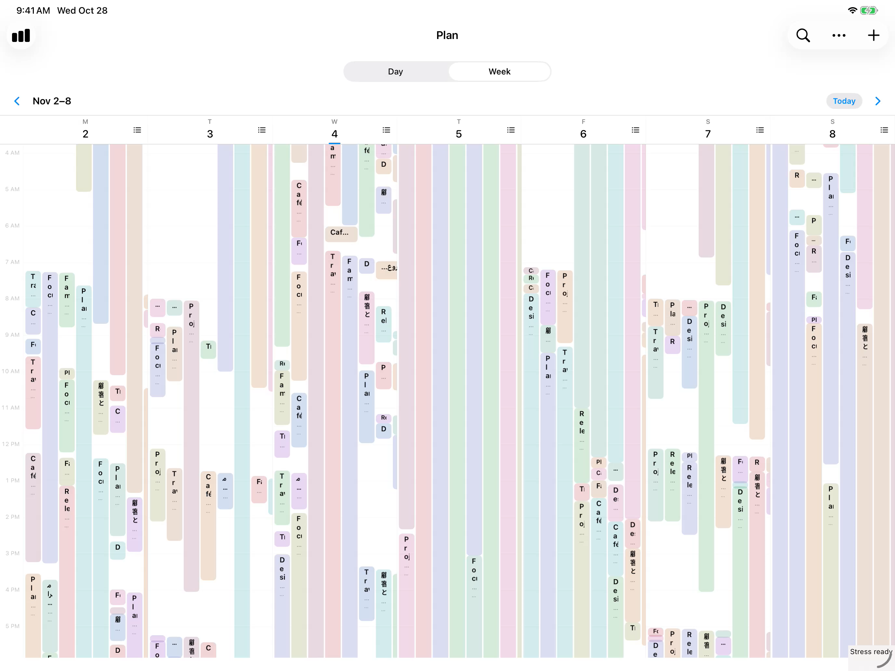
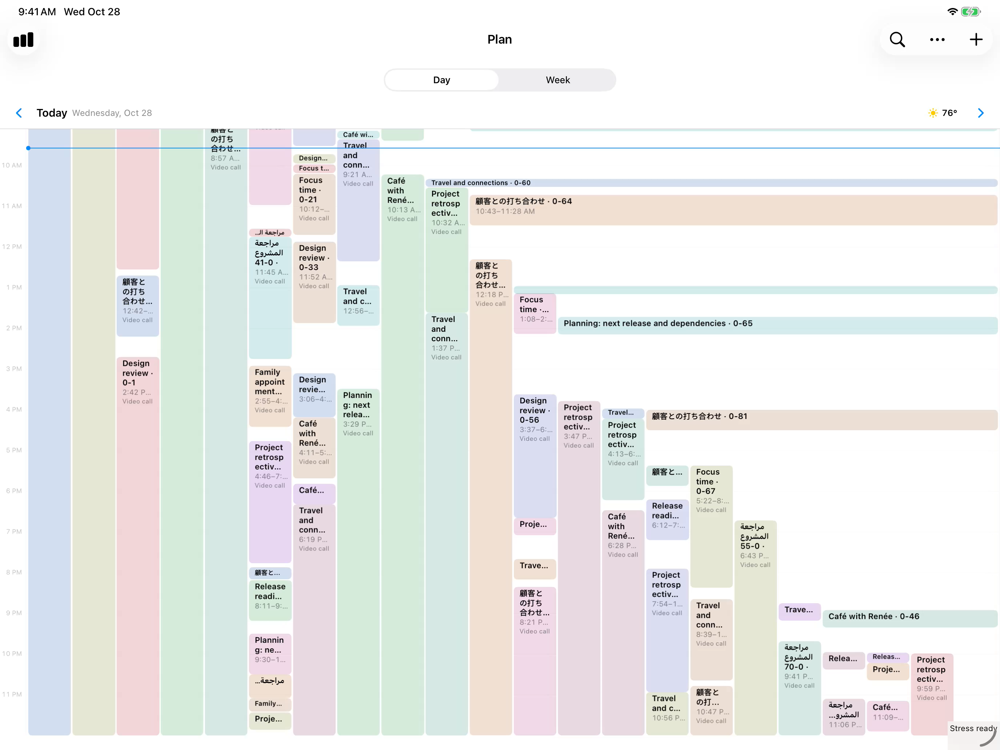

Engineering · An AI-driven hill climb
36,500 events · 120 Hz
iPhone 14 Pro · app work per update, old host vs new
Day preparation 29 → 16 ms · 48 blocks instead of 105
bananatheapp.com


Day + Week · Performance fixtures